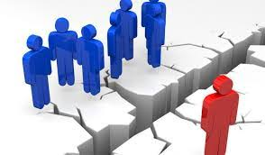
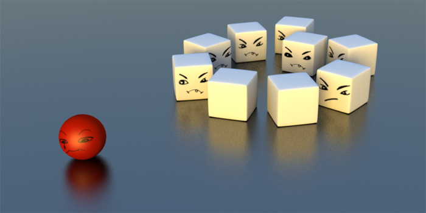

¿Qué es la exclusión social?
La exclusión social es un proceso estructural y dinámico que despoja a las personas de su condición de ciudadanos de pleno derecho, confinándolas a los márgenes de la sociedad. No se trata de una situación estática o un estado permanente, sino de un camino en el que se van rompiendo, de forma sucesiva, los lazos económicos, institucionales, culturales y relacionales que unen a un individuo con su comunidad. Para comprender a fondo este fenómeno, es necesario analizarlo desde su complejidad, sus causas y los distintos niveles en los que ocurre.

